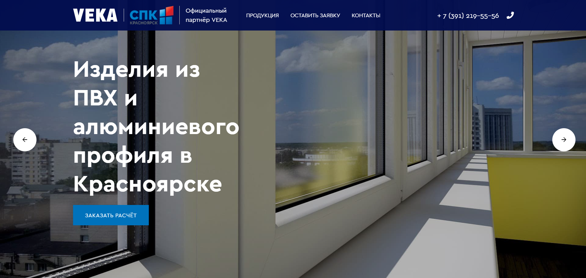
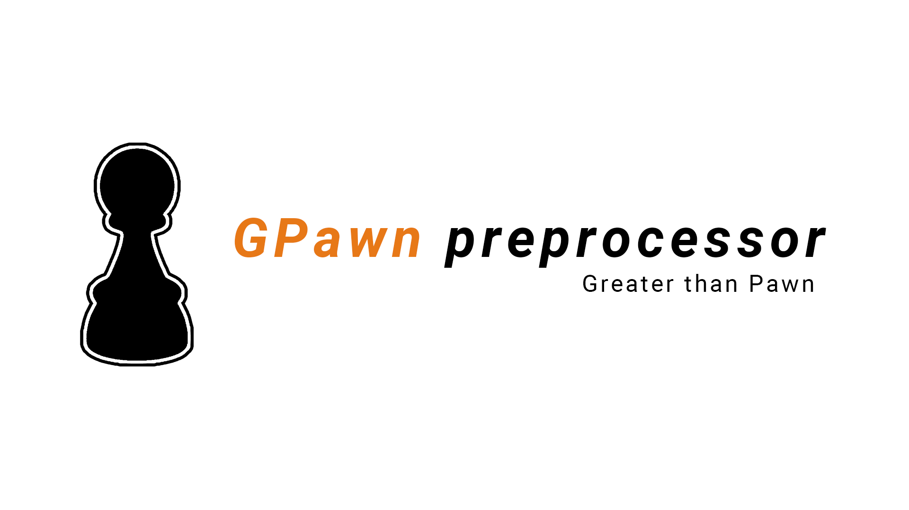
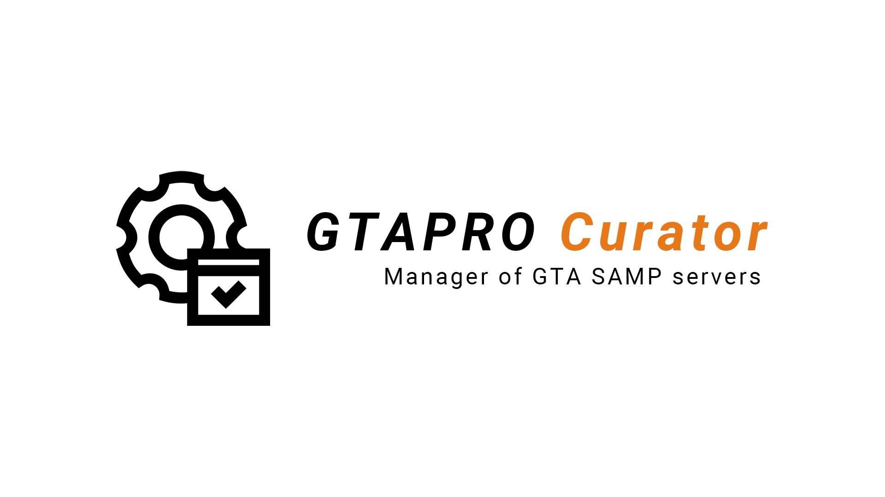
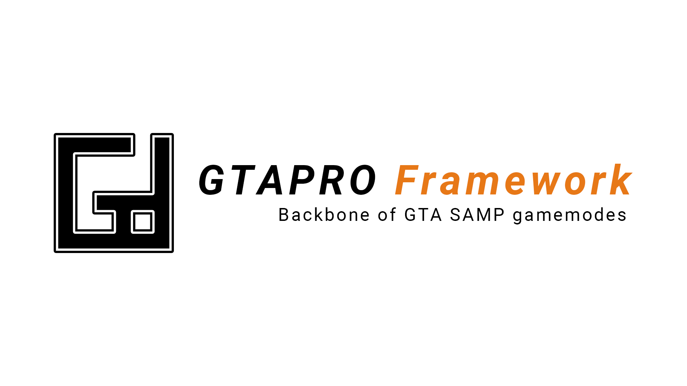

24 года
Москва, Россия
2+ года разработки на Python, 5+ лет программирования
Портфолио: https://bumloner.github.io/cv.html
Основной стек — Python, Django, PostgreSQL
Открыт к изучению новых технологий
Хорошие знания Python, классических алгоритмов и структур данных, шаблонов проектирования, ООП, SQL
Средние/базовые знания JavaScript, HTML, CSS, PHP, Lua, C/C++
Python, Django, DRF/Django-Ninja, PyJWT, Pytest, PostgreSQL, Redis
Что было сделано:
- разработка REST API
- двухфакторная аутентификация (2FA)
- регистрация
- восстановление пароля
- интеграция с внутренними web-сервисами по API
- реализация кастомных классов аутентификации JWT (Django Middleware, DRF Authentication)
- написание тестов, профилирование, отладка
- проведение код-ревью
Python, Django, PostgreSQL

Что было сделано:
- составление бэклога продукта
- проектирование архитектуры сайта
- разработка backend части сайта
- развертывание сайта на сервере
Python, AST, Regex, Pytest

Описание:
Препроцессор для языка программирования Pawn (https://www.compuphase.com/pawn/pawn.htm).
Добавляет ранее недоступные возможности для Pawn, с помощью новых синтаксических конструкций.
Преобразует код, написанный с использованием препроцессорного языка GPawn, в чистый и валидный код на Pawn.
Предназначен для разработки игровых режимов (модов) для онлайн-игры GTA SAMP.
Предоставляет широкие возможности современных языков программирования, элементы ООП, новые типы данных.
Возможность встраивания и выполнения Python-кода внутри кода на Pawn/GPawn.
Возможность интеграции игровых режимов с внешними ресурсами.
Что было сделано:
- составление бэклога продукта
- проектирование архитектуры и разработка препроцессора
- анализ и рефакторинг (улучшение качества кода и скорости выполнения)
- написание тестов, профилирование, отладка
- работа с регулярными выражениями
Python, Django, Subprocess

Описание:
Сервис для управления игровыми серверами GTA SAMP.
Содержит набор команд для автоматизации рутинных процессов при разработке, тестировании, деплое и администрировании серверов GTA SAMP.
Возможность интеграции игровых серверов с внешними системами и ресурсами, в том числе с Django ORM.
Что было сделано:
- составление бэклога продукта
- разработка cli для управления и обслуживания игровых серверов GTA SAMP
- интеграция игрового сервера GTA SAMP с внешними системами и ресурсами, в том числе с Django ORM
Python, Pawn/GPawn, SQL

Описание:
Фреймворк для создания игровых режимов GTA SAMP.
Предоставляет набор компонентов, которые помогают разрабатывать сложные игровые режимы (моды) для онлайн-игры GTA SAMP быстро и просто.
Что было сделано:
- составление бэклога продукта
- проектирование архитектуры и разработка фреймворка
- интеграция игрового сервера с внешними и внутренними системами
- анализ и рефакторинг (улучшение качества кода и скорости выполнения)
- написание тестов, профилирование, отладка
· Python
· Django
· PostgreSQL
· Docker
· Linux
· Git
· Nginx
· SQL
· REST
СФУ ИКИТ
Институт космических и информационных технологий
Красноярск
2016 — 2020 (4 года)
Почта: bumloner@yandex.ru
Telegram: @bumloner
GitHub: @bumloner
GitLab: @bumloner
Резюме: https://career.habr.com/bumloner